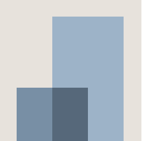

MS Data Science 🎓
University of Arizona — Aug 2023 – Dec 2024 · 📍 Tucson, AZ, USA
GPA: 3.5/4.0
Coursework:
Machine Learning
Data Mining
Data Analysis & Visualization
Artificial Intelligence
SQL/NoSQL Databases
Healthcare Data Science
Data Ethics
Project Management
Foundations of Data Science
Capstone
🧑💻 Capstone: Designed a high-efficiency semantic product search system (1.3M+ items) using Sentence Transformers, FAISS, and FLAN-T5; achieved 0.89 Precision@10.
🌎 Highlights: U.S. academic & cultural exposure collaborating on diverse projects; part-time Barista at Starbucks (customer service, teamwork) alongside studies.
Data Scientist | Team Lead 💼
LaunchLab — Jan 2025 – May 2025 · 📍 Remote (U.S. Startup)
Overview: LaunchLab is a U.S. startup building an AI-powered platform to validate startup ideas. It simulates user behavior and analyzes market trends to give founders insights before launch.
Core Work:
Data Preprocessing
ML Pipelines (2M+ items)
User Segmentation
Satisfaction Score Prediction
LangChain
OpenAI API
Dashboards
🚀 Impact: Engineered LaunchLab’s AI platform from scratch — sourcing and cleaning datasets, developing ML pipelines, training models, and prototyping core features. Later, as Team Lead, integrated LangChain and OpenAI APIs to transform it into a dynamic validator delivering automated, actionable insights.
👥 Leadership: Managed a team of 4 interns, delegating tasks, reviewing code, and integrating contributions into production-ready features.
B.Tech Computer Science 🎓
LNCT, Bhopal, MP, India — 2019–2023
CGPA: 8.2/10
📚 Coursework:
Data Structures & Algorithms
OOP
DBMS
System Design
Machine Learning
Computer Networks
Operating Systems
💡 Projects:
- 🐍 AI Snake Game — Playable Snake controlled by AI agents using A*, BFS, and Q-learning; visualized real-time pathfinding & decision-making.
- 🌱 Smart Crop Irrigation System — Smart India Hackathon: Led Team Cloud 6 to 🏆 1st place among 20+ teams. Built ML-driven IoT prototype optimizing irrigation using weather, soil type, terrain slope, earning recognition for agricultural innovation.
✨ Highlights: Gained strong CS foundations, applying theory into impactful projects blending algorithms, AI, and real-world problem-solving.
 Data Analyst 📊
Landmark Ventures — 2023 · 📍 Bhopal, MP, India (Real Estate & Construction)
Overview: Landmark Ventures is a real estate & construction company.
Worked as a Data Analyst intern, focusing on uncovering insights from property, sales, and customer datasets.
Core Work:
Python
Excel
Power BI
Data Cleaning & Preprocessing
Real Estate Trend Analysis
Sales & Customer Segmentation
🚀 Impact: Delivered structured dashboards and reports that helped identify profitable property segments, analyze buyer preferences, and forecast sales trends for better investment decisions.
✨ Highlights: First industry-facing experience — applied classroom concepts to real-world construction/real-estate data and strengthened my skills in Python, Power BI, Excel, and SQL.